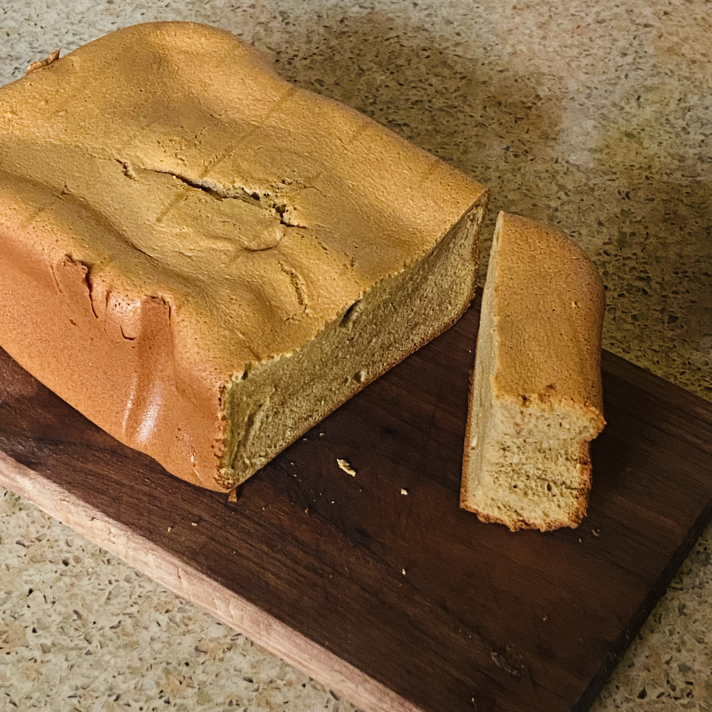

Moonfall Cloudberry Loaf

Description
A soft, lightly sweet loaf studded with mythical cloudfall berries that
release a floral-citrus aroma when baked. The crumb is tender and pale, with
a faint glow from a lunar syrup glaze.
What you need
- All-purpose flour
- Baking powder
- Fine sea salt
- Butter, softened
- Caster sugar
- Eggs
- Milk
- Cloudfall berries (imaginary golden berries)
- Vanilla extract
- Lunar syrup (fictional glaze made from night sugar)
How to make
- Preheat oven and line a loaf pan.
- Whisk flour, baking powder, and salt.
-
Cream butter and sugar until pale. Beat in eggs one at a time, then
vanilla.
-
Alternate folding in dry ingredients and milk until just combined.
- Gently fold in cloudfall berries.
- Pour batter into pan and bake until a skewer emerges clean.
- Brush warm loaf with lunar syrup and cool before slicing.
Take Me Home